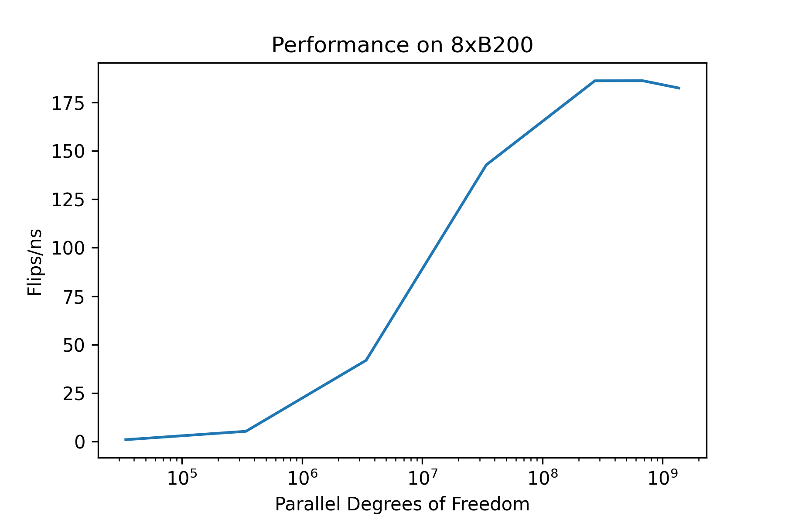

Spin Models in hamon#
Probabilistic computers that sample from graphical models defined over binary random variables are most natural to build using transistors, and therefore are of elevated interest to Extropic. As such, we've built some tooling into hamon that is dedicated to sampling from these binary PGMs and training machine learning models based on them. This notebook will walk through this functionality and show you how to use it.
We specifically consider spin-valued EBMs with polynomial interactions. These models implement the probability distribution,
Here, the \(s_i \in \{-1, 1\}\) are spin variables that couple with each other via the \(W^{(k)}\), which are scalars that represent the strengths of \(k^{th}\) order interactions. \(S_k\) is the set of all interactions of order \(k\).
A model of this type that contains at most second-order interactions is called an Ising model or Boltzmann machine. Boltzmann machines are one of the original machine learning models, and their significance was recognized in 2024 with a Nobel prize in physics for John Hopfield and Geoffrey Hinton.
Gibbs sampling defines a simple procedure for sampling from this type of model that is very hardware friendly. In particular, the Gibbs sampling update rule corresponding to the above energy function is,
where \(s_{nb(i)}\) are the spins that are neighbours of \(s_i\), and \(S_k[i]\) is the members of \(S_k\) that contain \(i\).
From the above equation, we see that we can implement the Gibbs sampling update rule for a spin-valued model by computing simple functions of the neighbour states, multiply-accumulating the results, and then using them to generate an appropriately biased random bit. This can be done very efficiently using mixed signal (analog + digital) hardware; we flesh out a way to do this using only transistors on a modern process in our recent paper.
Now that we understand the significance of this type of model, let's see how they can be sampled from using some of the tools built in to hamon.
First, some imports,
import time
import jax
import dwave_networkx
import jax.numpy as jnp
import jax.random
import matplotlib.pyplot as plt
import networkx as nx
import numpy as np
from hamon.block_management import Block
from hamon.block_sampling import sample_states, SamplingSchedule
from hamon.models.discrete_ebm import SpinEBMFactor
from hamon.models.ising import (
estimate_kl_grad,
hinton_init,
IsingEBM,
IsingSamplingProgram,
IsingTrainingSpec,
)
from hamon.pgm import SpinNode
In this example, we will implement a quadratic binary model (Ising model). We will use DWave's "Pegasus" graph topology to allow us to directly compare the speed of our GPU-based sampler to results obtained using other hardware accelerators,
# make the graph using DWave's code
graph = dwave_networkx.pegasus_graph(14)
coord_to_node = {coord: SpinNode() for coord in graph.nodes}
nx.relabel_nodes(graph, coord_to_node, copy=False)
Now we can define our model using the functionality exposed by hamon.models.ising. For the sake of this example, we will choose random values for the biases and weights \(W^{(1)}\) and \(W^{(2)}\),
nodes = list(graph.nodes)
edges = list(graph.edges)
seed = 4242
key = jax.random.key(seed)
key, subkey = jax.random.split(key, 2)
biases = jax.random.normal(subkey, (len(nodes),))
key, subkey = jax.random.split(key, 2)
weights = jax.random.normal(subkey, (len(edges),))
beta = jnp.array(1.0)
model = IsingEBM(nodes, edges, biases, weights, beta)
The IsingEBM class is simply a thin frontend that takes in your weights and biases and produces an appropriate set of SpinEBMFactors,
Now let's do some computation using our IsingEBM. Specifically, we are going to look at the tools hamon exposes for training this type of model in the context of machine learning. In machine learning, the variables in an EBM are often segmented into "visible" variables (x) and "latent" variables (z). The visible variables represent the data, and the latent variables serve to increase the expressivity of the model. Given these latent variables, our EBMs model of the data is,
When training EBMs, one is often interested in minimizing the distributional distance between the EBM and some dataset. This can be done by iteratively updating the model parameters according to the gradient,
Where \(D(Q||P)\) indicates the KL-divergence between Q and P, which is a common measure of distributional distance in machine learning. Each of the two terms in this gradient can be estimated by sampling from the EBM. The first term is estimated by clamping the data nodes to a member of the dataset and sampling the latents. The second is estimated by sampling both the data and latent variables. We can leverage hamon for both of these computations.
First, lets set up our block specifications for both the free and clamped sampling. First, lets choose some random subset of our nodes to represent the data,
n_data = 500
np.random.seed(seed)
data_inds = np.random.choice(len(graph.nodes), n_data, replace=False)
data_nodes = [nodes[x] for x in data_inds]
Now, lets compute the minimum coloring for the unclamped term in our gradient estimator,
coloring = nx.coloring.greedy_color(graph, strategy="DSATUR")
n_colors = max(coloring.values()) + 1
free_coloring = [[] for _ in range(n_colors)]
# form color groups
for node in graph.nodes:
free_coloring[coloring[node]].append(node)
free_blocks = [Block(x) for x in free_coloring]
and the same for the clamped term,
# in this case we will just re-use the free coloring
# you can always do this, but it might not be optimal
# a graph without the data nodes
graph_copy = graph.copy()
graph_copy.remove_nodes_from(data_nodes)
clamped_coloring = [[] for _ in range(n_colors)]
for node in graph_copy.nodes:
clamped_coloring[coloring[node]].append(node)
clamped_blocks = [Block(x) for x in clamped_coloring]
We have now defined everything we need to calculate some gradients! We can set up a few more details and get to it,
# lets define some random "data" to use for our example
# in real life this could be encoded images, text, video etc
data_batch_size = 50
key, subkey = jax.random.split(key, 2)
data = jax.random.bernoulli(subkey, 0.5, (data_batch_size, len(data_nodes))).astype(
jnp.bool
)
# we will use the same sampling schedule for both cases
schedule = SamplingSchedule(5, 100, 5)
# convenient wrapper for everything you need for training
training_spec = IsingTrainingSpec(
model, [Block(data_nodes)], [], clamped_blocks, free_blocks, schedule, schedule
)
# how many parallel sampling chains to run for each term
n_chains_free = data_batch_size
n_chains_clamped = 1
# initial states for each sampling chain
# hamon comes with simple code for implementing the hinton initialization, which is commonly used with boltzmann machines
key, subkey = jax.random.split(key, 2)
init_state_free = hinton_init(subkey, model, free_blocks, (n_chains_free,))
key, subkey = jax.random.split(key, 2)
init_state_clamped = hinton_init(
subkey, model, clamped_blocks, (n_chains_clamped, data_batch_size)
)
# now for gradient estimation!
# this function returns the gradient estimators for the weights and edges of our model, along with the moment data that was used to estimate them
# the moment data is also returned in case you want to use it for something else in your training loop
key, subkey = jax.random.split(key, 2)
weight_grads, bias_grads, clamped_moments, free_moments = estimate_kl_grad(
subkey,
training_spec,
nodes, # the nodes for which to compute bias gradients
edges, # the edges for which to compute weight gradients
[data],
[],
init_state_clamped,
init_state_free,
)
This function simply returns vectors for the weight and bias grads,
[ 0.7848 -0.33560008 -0.148 ... 0.00640005 -0.15759999
-0.01319999]
[0.43279994 1.1767999 0.04360002 ... 0.01319999 0.18919998 0.14079998]
which can be used to train your model using whatever outer loop code you want!
Because hamon is written in jax, it runs sampling programs very efficiently on GPUs and is competitive with the state of the art for sampling from sparse Ising models. Let's demonstrate that with a simple benchmark,
Warning
The following requires 8x GPUs.
mesh = jax.make_mesh((8,), ("x",))
sharding = jax.sharding.NamedSharding(mesh, P("x"))
timing_program = IsingSamplingProgram(model, free_blocks, [])
timing_chain_len = 100
batch_sizes = [8, 80, 800, 8000, 64_000, 160_000, 320_000]
times = []
flips = []
dofs = []
schedule = SamplingSchedule(timing_chain_len, 1, 1)
call_f = jax.jit(
jax.vmap(
lambda k: sample_states(
k,
timing_program,
schedule,
[x[0] for x in init_state_free],
[],
[Block(nodes)],
)
)
)
for batch_size in batch_sizes:
key, subkey = jax.random.split(key, 2)
keys = jax.random.split(key, batch_size)
keys = jax.device_put(keys, sharding)
_ = jax.block_until_ready(call_f(keys))
start_time = time.time()
_ = jax.block_until_ready(call_f(keys))
stop_time = time.time()
times.append(stop_time - start_time)
flips.append(timing_chain_len * len(nodes) * batch_size)
dofs.append(batch_size * len(nodes))
fig, axs = plt.subplots()
plt.title("Performance on 8xB200")
axs.plot(dofs, flips_per_ns)
axs.set_xscale("log")
axs.set_xlabel("Parallel Degrees of Freedom")
axs.set_ylabel("Flips/ns")
plt.savefig("fps.png", dpi=300)
plt.show()

You can compare your results to an FPGA implementation that bakes the sampling problem directly into hardware here (they get ~60 flips/ns).
Note that despite our focus on quadratic models here, hamon comes with the ability to support spin interactions of arbitrary order out of the box. This ability can be accessed via hamon.models.discrete_ebm.SpinEBMFactor,
# this creates a cubic interaction s_1 * s_2 * s_3 between a subset of our nodes
SpinEBMFactor(
[Block(nodes[:10]), Block(nodes[10:20]), Block(nodes[20:30])],
jax.random.normal(key, (10,)),
)
SpinEBMFactor(
node_groups=[
Block(nodes=(SpinNode(), SpinNode(), SpinNode(), SpinNode(), SpinNode(), SpinNode(), SpinNode(), SpinNode(), SpinNode(), SpinNode())),
Block(nodes=(SpinNode(), SpinNode(), SpinNode(), SpinNode(), SpinNode(), SpinNode(), SpinNode(), SpinNode(), SpinNode(), SpinNode())),
Block(nodes=(SpinNode(), SpinNode(), SpinNode(), SpinNode(), SpinNode(), SpinNode(), SpinNode(), SpinNode(), SpinNode(), SpinNode()))
],
weights=f32[10],
spin_node_groups=[
Block(nodes=(SpinNode(), SpinNode(), SpinNode(), SpinNode(), SpinNode(), SpinNode(), SpinNode(), SpinNode(), SpinNode(), SpinNode())),
Block(nodes=(SpinNode(), SpinNode(), SpinNode(), SpinNode(), SpinNode(), SpinNode(), SpinNode(), SpinNode(), SpinNode(), SpinNode())),
Block(nodes=(SpinNode(), SpinNode(), SpinNode(), SpinNode(), SpinNode(), SpinNode(), SpinNode(), SpinNode(), SpinNode(), SpinNode()))
],
categorical_node_groups=[],
is_spin={hamon.pgm.SpinNode: True}
)
That's about everything there is to know about binary EBMs in hamon! We hope you use these tools to help us gain a better understanding of how to most effectively use these powerful primitives in more advanced machine learning architectures.